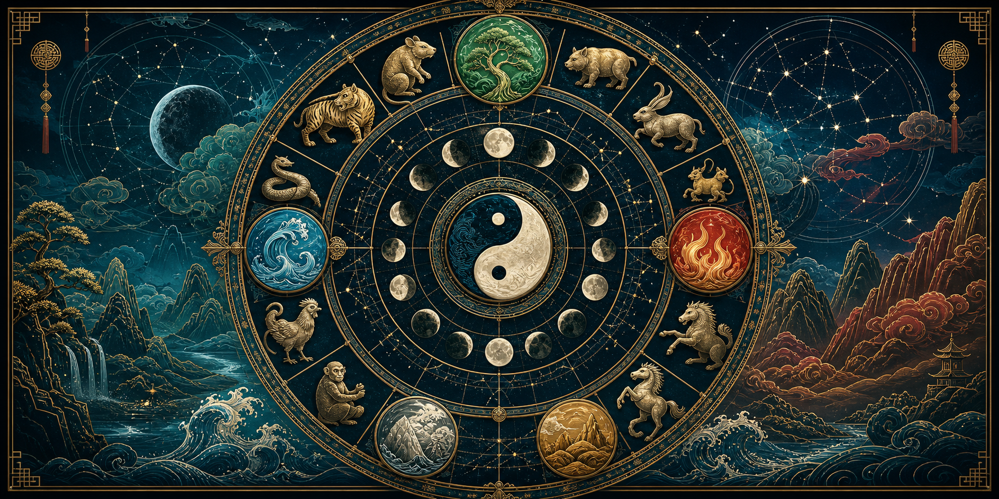

Eastern Astrology Chart
This tool combines two major Eastern astrology frameworks that use different logic: Chinese calendrical astrology, which reads time through the 10 Heavenly Stems, 12 Earthly Branches, zodiac animals, five elements, and yin-yang polarity; and Vedic/Jyotish-style sidereal lunar astrology, which emphasizes the sidereal zodiac, Moon nakshatra, lunar day, and waxing or waning half of the cycle.
The chart is interpretive and educational. Chinese pillar values are calculated with solar-calendar approximations, and the sidereal layer uses an approximate Lahiri-style ayanamsa suitable for a lightweight browser tool rather than a full traditional almanac.

Chart Controls
Chinese Calendrical Layer
| Pillar | Stem | Branch / Animal | Element | Polarity | Reading |
|---|
Sidereal Planetary and Lunar Layer
| Body | Sidereal Position | Nakshatra | Pada | Motion | Reading |
|---|
System Notes
Western tropical astrology usually starts from the seasonal equinox framework and emphasizes planetary aspects inside a twelve-sign zodiac. Chinese astrology is not primarily a map of planets against constellations; it is a cyclical calendar language built from stems, branches, animals, elements, and time periods. Vedic/Jyotish methods commonly use a sidereal zodiac and give the Moon a stronger organizing role through nakshatras and tithis.
For exact traditional work, especially birth charts, use the birth location, local time zone, daylight-saving rules, and a dedicated panchanga or Chinese almanac. This page is designed for real-time browser exploration and broad pattern reading.